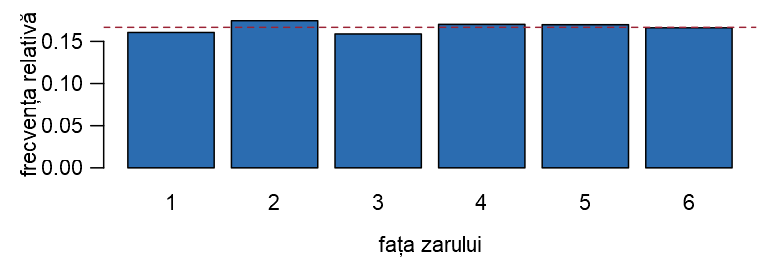
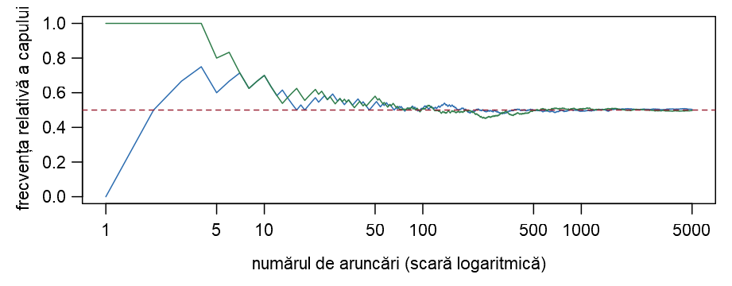

#> [1] 14
#> [1] 1024
#> [1] 3
#> [1] 2
#> [1] 3.844Probabilități și Statistică · Seminarul 1 (seminar și laborator) · Fișă de lucru (fără rezolvări)
Universitatea din București · Facultatea de Matematică și Informatică · 2026–2027
Fiecare problemă se lucrează întâi „cu creionul”, apoi pe calculator (Laborator), prin enumerarea spațiului stărilor sau prin simulare.
| Tema | Conținut |
|---|---|
| Breviar | rezultatele din Cursul 1 folosite azi |
| Primii pași în R | vectori, vectori logici, expand.grid, sample, replicate, funcții proprii, grafice |
| Evenimente și operații cu evenimente | trei servere; două zaruri pe un spațiu enumerat |
| Reguli de calcul și formula lui Poincaré | Python și Java; numere divizibile cu 2, 3 sau 5; margini pentru probabilități |
| Modelul clasic și numărare | extrageri cu și fără revenire; parole și anagrame; cărți de joc; zile de naștere |
| Problema potrivirilor prin simulare | cel puțin o potrivire, exact \(k\) potriviri, numărul mediu de potriviri |
| Studiu individual și temă | exerciții suplimentare, cu răspunsuri în fișa de lucru; temă |
La sfârșitul ședinței studentul trebuie să poată:
expand.grid și calcula probabilități cu mean(conditie);sample și replicate și compara frecvența relativă cu probabilitatea teoretică;De rezolvat la seminar (în această ordine):
expand.grid, sample, replicate, funcții proprii;expand.grid;%%;p_cu, p_fara;p_zile) și prin simulare;potriviri, exact_k.Dacă timpul permite: Exercițiul 3 (reuniunea și margini), Exercițiul 5 (Boole și Bonferroni), Exercițiul 7 (parole, coduri PIN, anagrame).
Pentru acasă: Exercițiile 2 și 8; exercițiile suplimentare 11, 12, 13, 14; tema.
Rezolvările complete vor fi publicate ulterior. Scheletele de cod R și răspunsurile: în fișa de lucru.
Din Cursul 1 folosim astăzi următoarele rezultate.
Evenimente. Un eveniment este o submulțime \(A\subseteq\Omega\) a spațiului stărilor (Definiția 3 din Cursul 1). Dicționar: \(A^c\) = „nu se realizează \(A\)”; \(A\cup B\) = „\(A\) sau \(B\)” (cel puțin unul); \(A\cap B\) = „\(A\) și \(B\)”; \(A\setminus B=A\cap B^c\) = „\(A\), dar nu \(B\)”; \(A\,\triangle\,B\) = „exact unul dintre \(A\) și \(B\)”. \(A\) și \(B\) sunt incompatibile dacă \(A\cap B=\emptyset\) (Definiția 5 din Cursul 1).
Relațiile lui De Morgan (Propoziția 4 din Cursul 1): \((A\cup B)^c=A^c\cap B^c\) și \((A\cap B)^c=A^c\cup B^c\); la fel pentru oricâte evenimente.
Reguli de calcul (Propoziția 14 din Cursul 1): \(\PP(A^c)=1-\PP(A)\); dacă \(A\cap B=\emptyset\), atunci \(\PP(A\cup B)=\PP(A)+\PP(B)\); dacă \(A\subseteq B\), atunci \(\PP(A)\le\PP(B)\); \[ \PP(A\setminus B)=\PP(A)-\PP(A\cap B),\qquad \PP(A\cup B)=\PP(A)+\PP(B)-\PP(A\cap B). \]
Formula lui Poincaré (Teorema 15 din Cursul 1), pentru trei evenimente: \[ \begin{aligned} \PP(A\cup B\cup C)&=\PP(A)+\PP(B)+\PP(C)\\ &\quad-\PP(A\cap B)-\PP(A\cap C)-\PP(B\cap C)+\PP(A\cap B\cap C). \end{aligned} \] Margini (Propozițiile 16 din Cursul 1 și 17 din Cursul 1): \[ \PP\Big(\bigcup_{i=1}^nA_i\Big)\le\sum_{i=1}^n\PP(A_i),\qquad \PP\Big(\bigcap_{i=1}^nA_i\Big)\ge\sum_{i=1}^n\PP(A_i)-(n-1). \] Modelul clasic (Definiția 19 din Cursul 1): dacă \(\Omega\) este finit și rezultatele sunt egal probabile, atunci \(\PP(A)=|A|/|\Omega|\) (cazuri favorabile supra cazuri posibile).
Interpretarea frecvenționistă (Secțiunea 4 din Cursul 1): dacă în \(N\) repetări ale experimentului \(A\) se realizează de \(N(A)\) ori, atunci \(N(A)/N\approx\PP(A)\) pentru \(N\) mare. Pe această idee se bazează orice simulare.
Numărare. Regula produsului (Propoziția 21 din Cursul 1); extrageri de \(k\) elemente din \(n\):
Zile de naștere (Exemplul 16 din Cursul 1): \(\PP(\text{cel puțin o coincidență})=1-\frac{365\cdot364\cdots(365-n+1)}{365^n}\). Potriviri (Exemplul 22 din Cursul 1): \(p_n=\sum_{k=1}^n\frac{(-1)^{k+1}}{k!}\to1-\frac1e\approx0.632\).
Instrumente R: vectori logici și mean(conditie); expand.grid (enumerare); sample, replicate (simulare); funcții proprii; plot, barplot.
R este un limbaj de programare și un mediu de lucru gratuit, dedicat calculului statistic și graficii. Îl folosim în fiecare săptămână ca să calculăm exact (formule, enumerarea tuturor rezultatelor) și ca să simulăm (repetăm experimentul de multe ori și numărăm).
> și apăsăm Enter: potrivită pentru încercări rapide..R; File → New File → R Script) păstrăm comenzile; linia curentă sau selecția se trimite în consolă cu Ctrl + Enter (Cmd + Enter pe macOS). Lucrați întotdeauna într-un script.# este un comentariu; pagina de ajutor a unei funcții: ?nume, de exemplu ?sample.#>.[1] din fața unui rezultat arată poziția primei valori afișate pe linie.<- (în RStudio: Alt + -). O atribuire nu afișează nimic; pentru a vedea valoarea unui obiect îi scriem numele. n și N sunt obiecte diferite.Obiectul de bază din R este vectorul: un șir de valori de același tip (numere, șiruri de caractere sau valori logice). Chiar și un număr este un vector de lungime \(1\).
#> [1] 1 2 3 4 5 6
#> [1] 0.00 0.25 0.50 0.75 1.00
#> [1] "H" "T" "H" "T" "H" "T"
#> [1] "R" "R" "A" "A" "A"Cu rep vom construi urne („\(6\) bile roșii și \(4\) albastre”), iar cu 1:n spații ale stărilor.
Operațiile se aplică element cu element (sunt vectorizate); indicii încep de la 1, nu de la 0.
#> [1] 5 9 16 17 24 43
#> [1] 0.03704 0.07407 0.13889 0.14815 0.21296 0.38889
#> [1] 8
#> [1] 4 15
#> [1] 8 15 16 23 42
#> [1] 16 23 42
#> [1] 6O comparație (==, !=, <, <=, >, >=) produce un vector de valori TRUE/FALSE. În calcule TRUE valorează \(1\) și FALSE valorează \(0\): suma numără valorile TRUE, iar media este proporția lor.
#> [1] FALSE TRUE FALSE TRUE FALSE FALSE TRUE FALSE
#> [1] 3
#> [1] 0.375| Eveniment | \(A\cap B\) („și”) | \(A\cup B\) („sau”) | \(A^c\) („nu”) | \(A\setminus B\) | \(A\,\triangle\,B\) („exact unul”) |
|---|---|---|---|---|---|
| În R | A & B |
A | B |
!A |
A & !B |
xor(A, B) |
Dacă ev este vectorul logic al unui eveniment (câte o componentă pentru fiecare rezultat), atunci sum(ev) este numărul cazurilor favorabile, iar mean(ev) este proporția lor: probabilitatea, când componentele corespund tuturor rezultatelor egal probabile (enumerare), respectiv frecvența relativă, când corespund unor repetări simulate.
Stânga: formulele de numărare din Cursul 1. Dreapta: table numără aparițiile fiecărei valori (util la simulări); which dă pozițiile valorilor TRUE; any / all: există un TRUE? / sunt toate TRUE?
Un eveniment poate fi reprezentat și ca mulțimea rezultatelor favorabile; R are funcții pentru operațiile cu mulțimi.
#> [1] 2 4 6 5
#> [1] 4 6
#> [1] 2
#> [1] 1 3 5
#> [1] FALSE TRUEexpand.gridPentru experimente cu mai multe etape (două zaruri, trei monede), expand.grid construiește un tabel (data frame) în care fiecare linie este un rezultat posibil; o coloană se extrage cu $.
#> [1] 36
#> z1 z2
#> 1 1 1
#> 2 2 1
#> 3 3 1
#> [1] 0.1667Aruncăm două zaruri echilibrate; \(M\) = cel mai mare dintre cele două numere. \(\{M\le4\}\) înseamnă că ambele zaruri arată cel mult \(4\): \(4\cdot4=16\) cazuri favorabile, deci \(\PP(M\le4)=\frac{16}{36}\approx0.4444\). Apoi \(\{M=4\}=\{M\le4\}\setminus\{M\le3\}\), deci \(\PP(M=4)=\frac{16}{36}-\frac{9}{36}=\frac7{36}\approx0.1944\). În R numărăm pe tabelul celor \(36\) de rezultate.
#> cel_mult_4 egal_cu_4
#> 0.4444 0.1944
#> M
#> 1 2 3 4 5 6
#> 1 3 5 7 9 11Valorile coincid cu cele calculate de mână; \(M=m\) are \(m^2-(m-1)^2=2m-1\) cazuri favorabile: \(1,3,5,7,9,11\).
sample și set.seedset.seed(2026) # fixează „sămânța” generatorului
sample(1:6, 1) # o aruncare a unui zar
sample(1:6, 10, replace = TRUE) # 10 aruncări (extrageri cu revenire)
sample(1:10, 3) # 3 bile din 10, fără revenire
sample(5) # o permutare aleatoare a lui 1, ..., 5
sample(c("H", "T"), 8, replace = TRUE, prob = c(0.8, 0.2))#> [1] 5
#> [1] 1 1 6 5 3 4 4 5 4 2
#> [1] 2 8 3
#> [1] 5 2 1 4 3
#> [1] "H" "H" "H" "H" "H" "H" "H" "T"sample(x, size) este „urna” noastră: implicit fără revenire; cu replace = TRUE, cu revenire. sample(n) este o permutare aleatoare a lui 1:n; prob dă probabilitățile elementelor.set.seed(numar) fixează generatorul (rezultate reproductibile).Simulăm \(10^4\) aruncări ale unui zar echilibrat și calculăm frecvențele relative ale celor șase fețe și a evenimentului „număr par”.
#> aruncari
#> 1 2 3 4 5 6
#> 0.161 0.174 0.159 0.170 0.170 0.166
#> [1] 0.5108Frecvențele sunt apropiate de \(1/6\approx0.167\), respectiv de \(1/2\): este interpretarea frecvenționistă a probabilității.
for și replicateUn experiment mai complicat se repetă cu o buclă for sau, mai scurt, cu replicate. Estimăm probabilitatea ca suma a două zaruri să fie \(7\) (valoarea exactă: \(6/36\approx0.1667\)).
#> [1] 0.1654
#> [1] 0.1656replicate(B, expresie) evaluează expresia de B ori și adună rezultatele într-un vector.
suma_zaruri <- function(k = 2) { # k = numărul de zaruri (implicit 2)
z <- sample(1:6, k, replace = TRUE)
sum(z) # ultima expresie este valoarea întoarsă
}
suma_zaruri() # suma a două zaruri
suma_zaruri(5) # suma a cinci zaruri
mean(replicate(B, suma_zaruri(3)) >= 12)
sapply(1:3, function(k) mean(replicate(B, suma_zaruri(k)) >= 4 * k))#> [1] 8
#> [1] 22
#> [1] 0.3797
#> [1] 0.4976 0.4230 0.3777Un experiment folosit de mai multe ori se împachetează într-o funcție. A treia linie de rezultate estimează \(\PP(\text{suma a trei zaruri}\ge12)=81/216=0.375\). sapply(valori, f) aplică funcția f fiecărui element: ultima linie estimează \(\PP(\text{suma a }k\text{ zaruri}\ge4k)\), \(k=1,2,3\) (exact: \(0.5\), \(15/36\approx0.4167\), \(0.375\); erori sub \(0.01\)).
TRUE/FALSE).B ori: rezultate <- replicate(B, experiment()).mean(conditie).Estimarea nu este exactă: pentru B = 1e4 eroarea este, de regulă, mai mică decât \(0.01\), iar pentru B = 1e5 mai mică decât \(0.003\) (vom vedea de ce în Cursul 7). De aceea comparăm doar primele două zecimale ale unei simulări cu valoarea teoretică.
plot(x, y) reprezintă punctele (x[i], y[i]), barplot desenează bare; peste un grafic adăugăm lines, points, abline. Culorile notelor sunt păstrate într-un vector cu nume (un element se extrage cu [[ ]]).
culori <- c(albastru = "#2B6CB0", rosu = "#9B2335", verde = "#2F7D4A",
portocaliu = "#C0661A", mov = "#7A3E8E", teal = "#1F7A7A",
gri = "#6B7785", bleumarin = "#1B3A5C")
barplot(frecv, col = culori[["albastru"]],
xlab = "fața zarului", ylab = "frecvența relativă")
abline(h = 1/6, lty = 2, col = culori[["rosu"]]) # dreapta y = 1/6
Aruncăm o monedă echilibrată de \(N=5000\) de ori și urmărim frecvența relativă a capului după primele \(1,2,\dots,N\) aruncări. Dacă moneda este vectorul rezultatelor (\(1\) = cap, \(0\) = pajură), cumsum(moneda) este numărul de capete obținute până la fiecare aruncare, iar împărțirea la 1:N dă frecvențele relative.
#> [1] 0.700 0.510 0.494 0.504La început frecvența relativă oscilează mult, apoi se apropie de \(0.5\).
plot(1:N, f, type = "l", log = "x", ylim = c(0, 1),
col = culori[["albastru"]],
xlab = "numărul de aruncări (scară logaritmică)",
ylab = "frecvența relativă a capului")
moneda2 <- sample(c(1, 0), N, replace = TRUE) # o a doua serie
lines(1:N, cumsum(moneda2) / (1:N), col = culori[["verde"]])
abline(h = 0.5, lty = 2, col = culori[["rosu"]])
Ambele serii se stabilizează în jurul valorii \(0.5\), ca în figura corespunzătoare din Secțiunea 4 din Cursul 1.
La seminar Un serviciu web rulează pe trei servere; la un moment dat, fiecare server fie funcționează, fie este căzut. Notăm cu \(A_i\) evenimentul „serverul \(i\) funcționează”, \(i=1,2,3\).
Pentru acasă Aruncăm două zaruri echilibrate, unul roșu și unul albastru. Considerăm evenimentele \(A\) = „suma celor două numere este pară” și \(B\) = „cel puțin un zar arată \(6\)”.
Dacă timpul permite Alegem la întâmplare un student al unei facultăți. Probabilitatea ca studentul să știe Python este \(0.70\), probabilitatea să știe Java este \(0.45\), iar probabilitatea să știe ambele limbaje este \(0.30\).
La seminar Alegem la întâmplare un număr din mulțimea \(\{1,2,\dots,1000\}\), toate numerele fiind egal probabile. Notăm cu \(D_k\) evenimentul „numărul ales este divizibil cu \(k\)”.
%% pe vectorul 1:1000. Cum se schimbă răspunsul de la (b) dacă alegem numărul din \(\{1,\dots,N\}\), pentru \(N=10\), \(100\), \(1000\) și \(10^6\)?Dacă timpul permite O aplicație este livrată numai dacă trece toate cele \(n=5\) teste automate. Din istoricul proiectului se știe că fiecare test, luat separat, este trecut cu probabilitatea \(0.98\); nu se știe însă nimic despre legătura dintre teste. Fie \(T_i\) evenimentul „testul \(i\) este trecut”, \(i=1,\dots,5\).
La seminar O urnă conține \(10\) bile: \(6\) roșii și \(4\) albastre. Extragem la întâmplare \(3\) bile.
Dacă timpul permite (a) O parolă este formată din \(4\) litere mici ale alfabetului englez (\(26\) de litere). Câte parole există? Câte dintre ele au toate literele diferite? (b) Un cod PIN este format din \(4\) cifre alese la întâmplare (toate codurile de la \(0000\) la \(9999\) sunt egal probabile). Care este probabilitatea ca cifrele codului să fie toate diferite? Dar ca măcar o cifră să se repete? (c) Câte anagrame (cuvinte diferite, nu neapărat cu sens) are cuvântul ANANAS? (d) Cele șase litere ale cuvântului ANANAS sunt scrise pe șase cartonașe, care se amestecă și se așază în linie la întâmplare. Care este probabilitatea ca cele trei litere A să fie alăturate? Dar ca șirul obținut să înceapă cu A și să se termine cu S? (e) Verificați în R punctul (b) prin enumerare și punctele (c) și (d) prin simulare.
Pentru acasă Dintr-un pachet bine amestecat de \(52\) de cărți (\(13\) figuri, fiecare în \(4\) culori) se extrag \(5\) cărți. Calculați probabilitatea ca mâna obținută:
expand.grid și verificați rezultatele prin simulare.La seminar Într-o grupă de laborator sunt \(n\) studenți. Ca în Exemplul 16 din Cursul 1, presupunem că anul are \(365\) de zile, la fel de probabile ca zi de naștere; \(q_n\) este probabilitatea ca cel puțin doi studenți să aibă aceeași zi de naștere.
p_zile(n, zile = 365) care calculează \(q_n\) cu ajutorul lui prod. Calculați \(q_{25}\) și cel mai mic \(n\) pentru care \(q_n\ge1/2\), respectiv \(q_n\ge0.99\).La seminar La intrarea într-un examen, cei \(n\) studenți își lasă telefoanele într-o cutie; la ieșire, telefoanele sunt împărțite la întâmplare, câte unul fiecărui student (cele \(n!\) împărțiri sunt egal probabile). Avem o potrivire când un student își primește propriul telefon; \(N\) = numărul de potriviri. Din Exemplul 22 din Cursul 1, \(\PP(N\ge1)=p_n=\sum_{k=1}^n\frac{(-1)^{k+1}}{k!}\).
potriviri(n) care simulează o împărțire și întoarce numărul de potriviri. Estimați \(\PP(N\ge1)\) pentru \(n=10\) și comparați cu \(p_{10}\) și cu limita \(1-1/e\).Exercițiile suplimentare reiau, în ordine, temele ședinței; răspunsurile: în fișa de lucru; rezolvările complete vor fi publicate ulterior.
Pentru acasă Un generator produce un șir de \(n\) biți, toate cele \(2^n\) șiruri fiind egal probabile; \(A_j\) = „bitul de pe poziția \(j\) este \(1\)”. Pentru \(n=4\), scrieți cu ajutorul lui \(A_j\) și calculați probabilitățile evenimentelor \(U\) = „cel puțin un bit este \(1\)” și \(V\) = „există doi biți consecutivi egali cu \(1\)”. Pentru \(n\) oarecare: probabilitatea ca exact \(k\) biți să fie \(1\). În R, pentru \(n=10\): \(\PP(V)\) prin enumerare.
Pentru acasă Ana aruncă două zaruri obișnuite și adună punctele; Barbu aruncă un zar cu \(12\) fețe. Câștigă cel cu punctajul mai mare; la egalitate este remiză. Calculați probabilitățile celor trei rezultate. Este jocul echitabil? Dar dacă Ana aruncă trei zaruri, iar Barbu un zar cu \(20\) de fețe (în R, prin enumerare)?
Pentru acasă Nouă pasageri urcă într-un tren cu trei vagoane; fiecare alege la întâmplare unul dintre vagoane (toate cele \(3^9\) moduri de alegere sunt egal probabile). Calculați probabilitatea ca:
Răspunsurile: în fișa de lucru; rezolvarea completă va fi publicată ulterior.
Pentru acasă În problema potrivirilor (Exercițiul 10) numărul de potriviri este numărul de puncte fixe ale unei permutări alese la întâmplare.
permutari(n) care întoarce toate permutările lui \(\{1,\dots,n\}\) (pentru \(n\le6\)) și verificați punctul (a).exact_k și calculați numărul mediu de puncte fixe.Răspunsurile: în fișa de lucru; rezolvarea completă va fi publicată ulterior.
%%.expand.grid, apoi estimați aceeași probabilitate printr-o simulare cu \(10^5\) repetări.potriviri din Exercițiul 10, probabilitatea ca nimeni să nu își extragă propriul nume și probabilitatea ca exact două persoane să își extragă propriul nume; comparați cu valorile date de exact_k.Lecturi recomandate: (Blitzstein and Hwang 2019, cap. 1), (Bertsekas and Tsitsiklis 2008, cap. 1); pentru simulări în R: (Wagaman and Dobrow 2021, cap. 1); pentru o introducere pe îndelete în R: (Davies 2016), (Verzani 2014).
Probabilități și Statistică · Seminarul 1 — Evenimente, numărare, primii pași în R